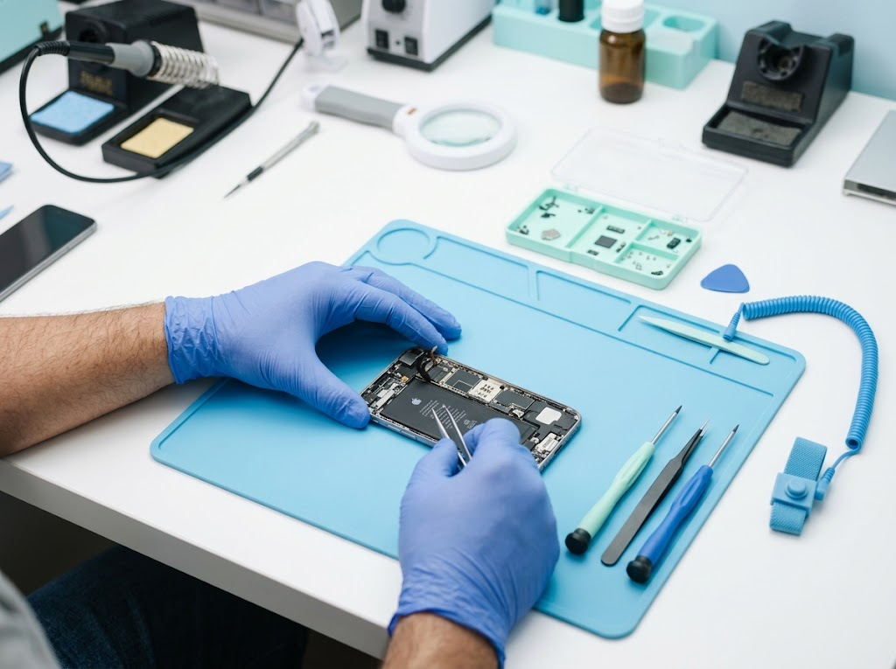

Wymiana ekranu i szybki
Gdy ekran jest pęknięty, miga, ma plamy albo przestał reagować na dotyk. Po montażu sprawdzamy dotyk, jasność, czujnik zbliżeniowy i jakość obrazu.
Mobilny serwis iPhone w Rybniku
Przyjeżdżamy, naprawiamy i testujemy telefon w specjalnie przygotowanym samochodzie serwisowym. Bez konieczności wchodzenia do domu lub biura, z jasną wyceną przed naprawą.
4,9/5 · 164 opinie Google
Dla osób, które potrzebują telefonu bez przerwy
Rozbita szybka, słaba bateria, brak ładowania albo telefon po upadku zwykle oznaczają stres i niepewność. MojIphone działa jako mobilny serwis: przyjazd, diagnoza i naprawa odbywają się bez organizowania wyprawy do punktu.
Taka forma skraca cały proces i dobrze pasuje do osób, które pracują z telefonu, prowadzą firmę albo chcą załatwić naprawę między codziennymi obowiązkami.
Najczęstsze naprawy iPhone
Gdy ekran jest pęknięty, miga, ma plamy albo przestał reagować na dotyk. Po montażu sprawdzamy dotyk, jasność, czujnik zbliżeniowy i jakość obrazu.
Dla telefonów, które szybko się rozładowują, wyłączają się przy większym obciążeniu albo pokazują niski stan kondycji baterii.
Czyścimy i diagnozujemy złącze, sprawdzamy kabel, płytkę ładowania oraz objawy związane z wolnym lub przerywanym ładowaniem.
Pomagamy, gdy rozmówcy Cię nie słyszą, zdjęcia są rozmazane, FaceTime traci dźwięk albo głośnik zaczyna charczeć.
Otwieramy telefon, oceniamy ślady cieczy i informujemy, co ma sens naprawiać. Nie obiecujemy cudów, tylko rzetelną ocenę stanu urządzenia.
Sprawdzamy ekran, ramkę, aparat, ładowanie, anteny i inne elementy, które mogły ucierpieć nawet wtedy, gdy telefon wygląda dobrze.
Jak wygląda wizyta
Zadzwoń lub wyślij formularz. Podaj model i napisz, co się stało: upadek, zalanie, problem z baterią, ładowaniem albo ekranem.
Technik ocenia usterkę, dostępność części i możliwy czas naprawy. Jeśli problem wymaga dłuższej diagnostyki, mówimy o tym od razu.
Naprawa zaczyna się po Twojej zgodzie. Po zakończeniu wykonujemy testy podstawowych funkcji i przekazujemy zalecenia.
Cennik napraw iPhone
Ceny zostały przeniesione z obecnej strony MojIphone. Po wybraniu modelu tabela pokazuje wymienianą część, cenę zamiennika, cenę oryginału oraz orientacyjny czas naprawy.
Wybrany model
Cennik dla wybranego modelu
| Wymieniana część | Zamiennik | Oryginał | Czas |
|---|
Dojazd na terenie Rybnika jest ujęty w cenniku obecnej strony. Inne miasta wymagają potwierdzenia kosztu dojazdu.
Mobilny serwis iPhone
MojIphone obsługuje lokalne naprawy iPhone na terenie Rybnika oraz okolic. Klient może umówić mobilny serwis pod domem, pod pracą albo w innym wygodnym miejscu po wcześniejszym kontakcie telefonicznym.
Opinie klientów
Prawdziwe opinie klientów mobilnego serwisu, bez wyjątków i bez ściemy.
„Bardzo polecam. Już kilkukrotnie korzystałem z usług tej firmy i nie mam żadnych zastrzeżeń. Dzisiejsza ekspresowa naprawa zasługuje na słowa uznania, sobota i robota wykonana w ciągu 2 godzin (wymiana baterii i wyświetlacza). Na pewno jeszcze nie raz skorzystam z usług mobilnego serwisu.”
„Zleciłem wymianę tyłu w IP 15 Pro, wymiana trwała 30 min pod domem, co uważam za super wygodę. Naprawa jak i sam kontakt przebiegł bardzo sprawnie i przyjemnie.”
„Zleciłem wymianę akumulatora w IP 14 Pro. Chwilkę to trwało, bo część była słabo dostępna - chodzi o oryginalną część od Apple. Ale jak już otrzymali, kontakt, przyjazd i wymiana express! Wymiana dobrze zrobiona, cenowo jak na pozagwarancyjny serwis OK.”
„Od lat serwisuję tam wszystkie swoje iPhony, chłopaki nigdy mnie nie zawiedli, zawsze kulturalna miła obsługa i duża wiedza serwisantów na temat sprzętu. Polecam wszystkim bardzo serdecznie to miejsce.”
„Polecam każdemu! Miałam wymienianą baterię i przy okazji wyczyszczony głośnik. Sama usługa była bardzo szybka. Dużym plusem jest to, że pan z całym sprzętem przyjechał do mnie do domu, co jest bardzo wygodne.”
Odpowiedzi przed wizytą
Najczęściej naprawa jest możliwa tego samego dnia, jeśli część jest dostępna. Przy rzadszych modelach termin potwierdzamy telefonicznie.
Tak. Każdy numer na stronie ma link telefoniczny. Na telefonie po dotknięciu numeru system otworzy ekran połączenia z numerem 570 222 345.
Nie trzeba wpuszczać serwisanta do domu ani biura. Obecna oferta MojIphone zakłada naprawę w specjalnie przystosowanym samochodzie serwisowym.
Najpierw trzeba sprawdzić płytę i złącza. Nie podłączaj zalanego telefonu do ładowarki. Im szybciej trafi do diagnostyki, tym większa szansa na ograniczenie szkód.
Nie, ale przyspiesza to wycenę. Model znajdziesz w ustawieniach telefonu albo na pudełku. Jeśli telefon się nie uruchamia, sprawdzimy go na miejscu.
Standardowe naprawy mechaniczne nie wymagają kasowania danych. Mimo to warto mieć aktualną kopię zapasową, zwłaszcza przy zalaniu lub problemach z płytą.
Tak, po naprawie możemy wystawić dokument sprzedaży. Dane do faktury najlepiej podać przy przyjęciu telefonu.
Jeśli to możliwe, wykonaj kopię zapasową, wyłącz blokady ograniczające testy i zabierz kod odblokowania albo zostań na miejscu podczas testowania funkcji.
Szybka konsultacja
Podaj model iPhone, objawy i preferowany kontakt. Najszybsza droga do potwierdzenia terminu i ceny to telefon, a formularz pomoże zebrać informacje potrzebne do obsługi zgłoszenia.
MojIphone